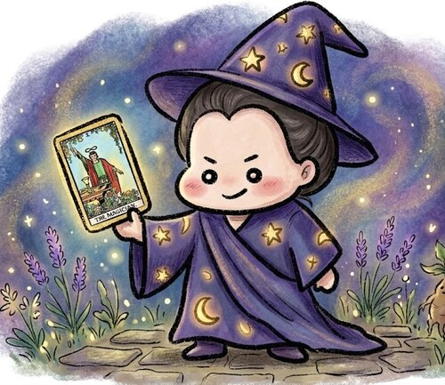

오늘의 타로 점괘
메이저+마이너 아르카나 78장 중
오늘의 카드 한 장을 뽑아보세요

안녕! 오늘 타로는 내가 봐줄게 🔮

✨ ⭐ ✨ 💫 ⭐ ✨🔮
카드를 탭해서 오늘의 메시지를 확인해보세요
광고 영역 (심사 통과 후 게재 예정)
⚠️ 타로 카드는 78장(메이저 아르카나 22장 + 마이너 아르카나 56장) 중 무작위로 뽑히며, 같은 날 다시 방문하면 같은 카드가 나와요(날짜가 바뀌면 새 카드로 자동 갱신). 이 콘텐츠는 재미로 즐기는 운세이며 중요한 의사결정의 근거로 사용하지 마세요.